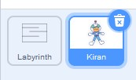
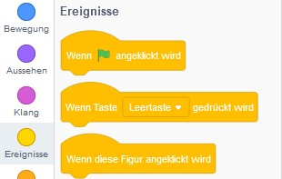
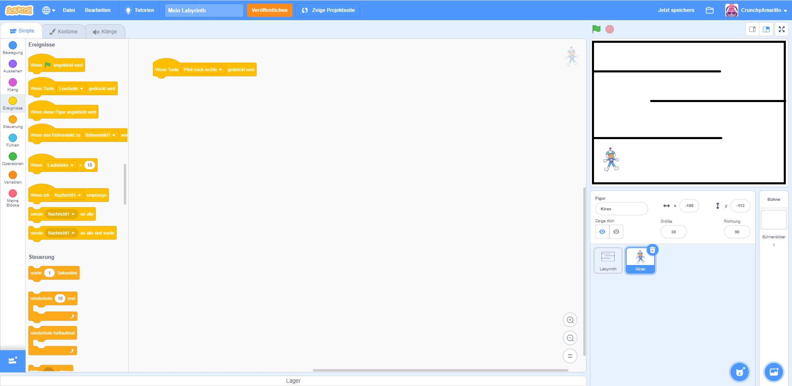
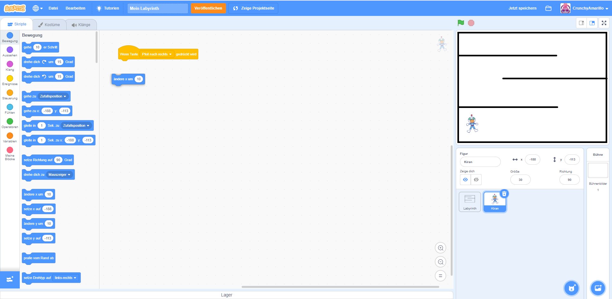
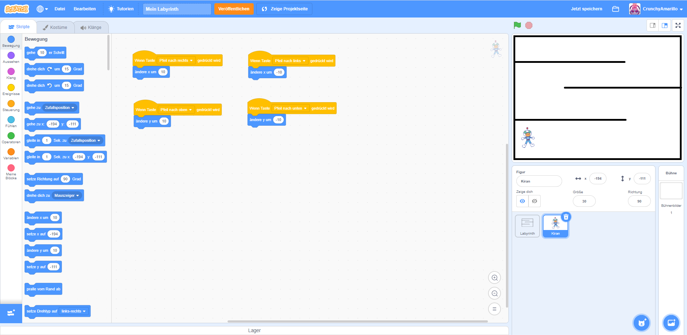

Figuren bewegen
Jetzt ist es endlich soweit - wir starten mit dem Programmieren und erwecken deine Figur zum Leben.
1. Aktive Figur beachten
Du hast nun zwei Figuren in deiner Übersicht: Das Labyrinth und deine Figur. Jede Figur hat ihre eigenen Einstellungen und ihren eigenen Programmierbereich. Du musst also immer genau darauf achten, welches gerade die ausgewählte Figur ist. Wir bezeichnen die ausgewählte Figur auch als aktive Figur. Du erkennst die aktive Figur daran, dass diese in der Übersicht blau umrandet ist und das Mülleimer-Symbol angezeigt wird. Der Programmcode, den du schreibst, ist immer nur für die aktive Figur gültig. Du kannst also für verschiedenen Figuren jeweils unterschiedlichen Programmcode schreiben. 
Achte darauf, dass die aktive Figur jetzt deine eigene Figur ist. In meinem Fall ist das Kiran.
2. Tastatur-Block auswählen
Wir wollen nun die Figur zunächst nach rechts laufen lassen, wenn die rechte Pfeiltaste auf der Tastatur gedrückt wird. Das geht, in dem wir den Wert der X-Position verändern und größer werden lassen. Wenn du noch nicht weißt, was die X-Position ist, dann lies dir bitte zunächst den Abschnitt zum Koordinatensystem noch einmal genau durch.
Wähle nun links in der Blockübersicht (4.) die Gruppe "Ereignisse". Suche nun in den Programmblöcken
(5.)
den Block Wenn Taste (Leertaste) gedrückt wird. Klicke diesen Block mit der Maus an,
halte die linke Maustaste dabei gedrückt und ziehe nun den Block in das Programm-Code-Fenster (2.)
an eine
frei Stelle. Platziere den Block, in dem du die linke Maustaste wieder loslässt.

Klicke nun den Text (Leertaste) im Block an. Es öffnet sich einen Auswahlliste. Hier
wählst
du nun bitte (Pfeil nach rechts) aus. Dein Program-Code sollte nun so aussehen:

3. Nach rechts bewegen
Nun wählst du in der Blockübersicht die Gruppe "Bewegung" und suchst den Programmblock ändere x
um. Ziehe diesen nun auch in das Programm-Code-Fenster und verbinde ihn direkt mit dem
schon vorhandenem Block Wenn Taste `Pfeil nach rechts` gedrückt wird.

Wichtig ist, dass die beiden Blöcke direkt verbunden sind. Du kannst testen, ob dein Code
funktioniert in dem du noch einfach auf deiner Tastatur die rechte Pfeiltaste drückst.
Im Vorschaufenster sollte sich deine Figur dann nach rechts bewegen. Die Zahl, welche im "ändere
x um" Block hinterlegt ist, zeigt dir, wie schnell sich deine Figur bewegt. Voreinstellt
ist
ein Wert von 10. Das bedeutet, jedes mal, wenn du die rechte Pfeiltaste deiner Tastatur anklickst,
dann bewegt sich deine Figur um 10 (Pixel) nach rechts. Steht die Figur am Anfang bei 0, dann steht
sie nach einmal klicken bei 10, nach zweimal klicken bei 20 und so weiter. Du kannst auch
beobachten, wie sich der X-Wert der Figur in der Figurenübersicht verändert.
4. In alle Richtungen bewegen
Nun weißst du bereits, wie die Figur sich nach rechts bewegt. Du kannst nun schon selbstständig dein Programm erweitern und die Figur sich auch noch links und oben und unten bewegen lassen. Nutze dazu folgende Programm-Blöcke:
Wenn Taste (Leertaste) gedrückt wird(Gruppe: Ereignisse)ändere x um(Gruppe: Bewegung)ändere y um(Gruppe: Bewegung)
Wenn du fertig bist, dann sollte der Programmcode deiner Figur in etwa so aussehen: 
5. Ausprobieren
Deine Figur kann sich nun bewegen. Probier es einfach einmal aus. Aktiviere den Vollbildmodus im
Vorschaufenster  und
starte dein Programm.
und
starte dein Programm.